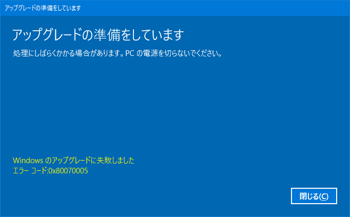
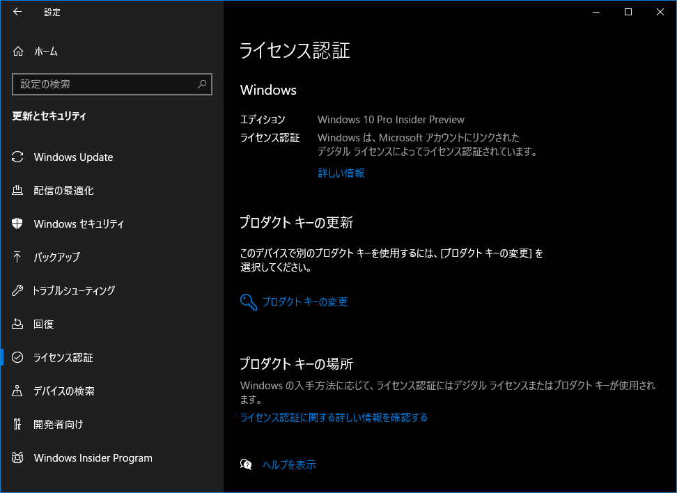

Windows10 Home から Windows10 Pro にアップデートしてみた
母艦として使用している Galleria XG だが、OS が Windows10 Home なのである。
Docker-Toolbox や WSL 周りで躓くのがいい加減嫌になってきたので、Windows10 Pro にアップグレードすることにした。
以下のサイトを参考に、「設定」アプリ → 更新とセキュリティ → ライセンス認証 → Microsoft Store に移動 と進むと、Windows10 Pro へのアップグレードが購入できる。値段は 13,824円 なり。
アップグレード後、次のようなエラーが出た。

0x80070005 エラーはセキュリティソフトが邪魔している疑惑らしいのだが、再起動してみたら問題が解消した。
しかし、今度は 0x80070002 エラーが表示されていた。
コチラは sfc /scannnow したり、C:\Windows\SoftwareDistribution\ フォルダを削除したりすると直るらしく、やってみたら直った。

というワケで、Insider Preview を有効にしているせいか、なんやかんやおかしな挙動も見受けられたけど、とりあえず Windows10 Pro になったのでよきよき。